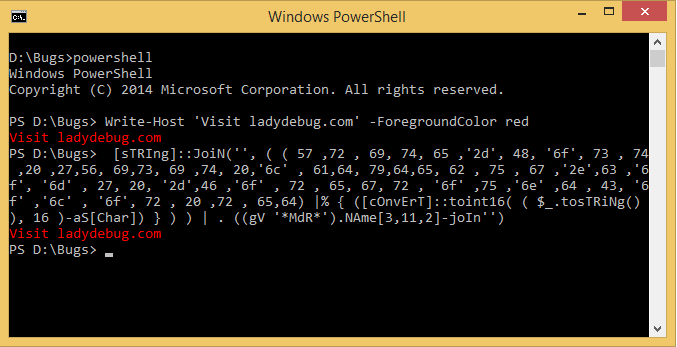

Reversing Obfuscated PowerShell
Background
During a routine sweep of a workstation, a suspicious PowerShell script was found in the C:\Users\Public\Documents\ directory. The script appears to contain an encoded blob that is decoded and executed at runtime. Your goal is to use CyberChef to reveal the hidden command and understand what changes it makes to the system.
Objectives
- Identify the encoding and encryption methods used in the script.
- Use CyberChef to decode the
$eNcBlO.
- Determine the final command being executed and the registry key it modifies.
Walkthrough
Step 1: Open CyberChef
- Open a web browser and select the bookmark for CyberChef. This will open a local copy of CyberChef that is located in the
./career-fair/host_dfir_1 directory.
- Once CyberChef is open, select the rectangle with an arrow pointed towards the right to import a file from the system. Import
./career-fair/host_dfir_1/what_dos_this_do.ps1.
Step 2: Decode the Payload
- There is some encoded data contained within this PowerShell script. Identify it, copy the encoded data, and paste it into a new input tab by selecting the plus sign in the top right.
- In CyberChef, drag the following "Operations" from the left pane into the "Recipe" pane in order (some of these options may be suggested to you from the CyberChef wizard):
- From Base64: This is identified by the
$bytes = [System.Convert]::FromBase64String($eNcBlO) line in the script.
- Gunzip: This matches the
GzipStream line in the script.
- XOR Brute Force: Without knowing the key used for the XOR operation, we can brute force the possible output to find the key. Note: The key length is only one byte.
Step 3: Examine the Output
- Look at the Output pane in CyberChef. You should now see a cleartext PowerShell command!
- Do some open source research on the output to learn what the malicious script is attempting to do.
- The "Why": Attackers use obfuscation (encoding, compression, and encryption) to hide their activities from antivirus software and security analysts. Learning to "peel back the layers" is a fundamental skill in Malware Analysis.
Conclusion
You have successfully reversed the obfuscation to reveal that the script creates a persistence mechanism in the Windows Registry to run a file named totes_legit_not_malware.exe on startup.
Obfuscation is commonly employed by malicious cyber actors to slow down investigations and try to evade defenses on your system.
There are more ways to perform obfuscation using legitimate tools and native utilities, as seen below:

Cleanup & Reset
- Just close the web browser and that's it!